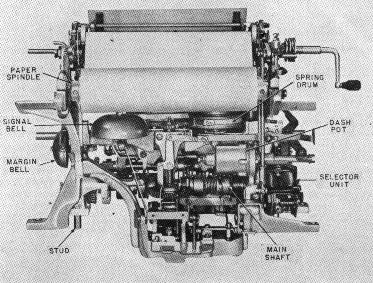
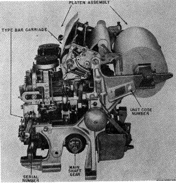
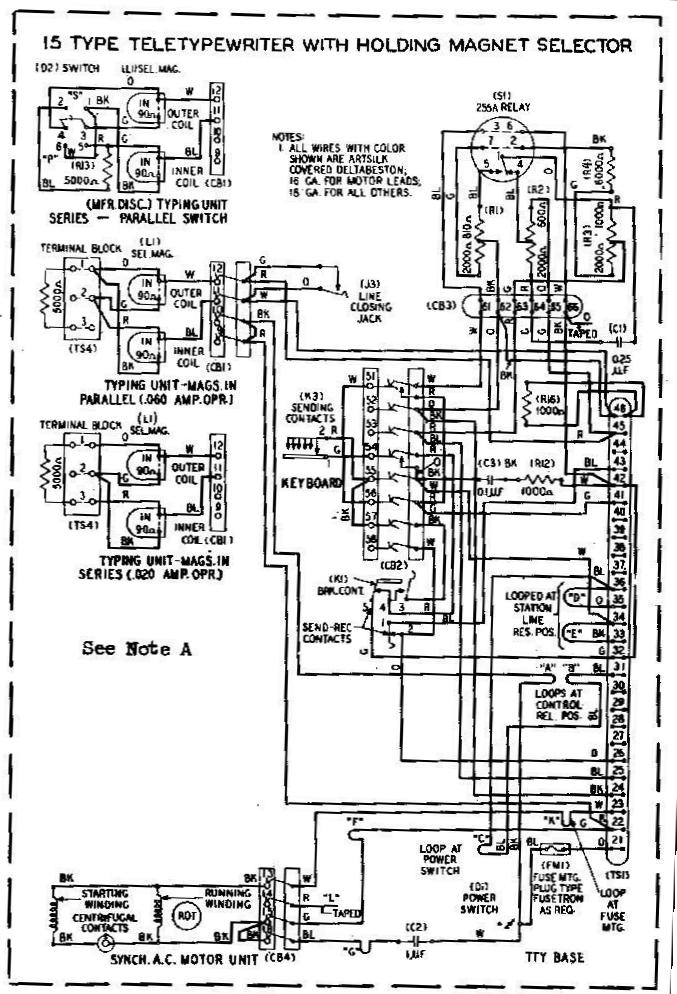

MODEL 15 TELETYPERecently the Telephone Company released a number of the model 15s to RTTY, INC., to sell to licensed amateurs at a very reasonable price. These machines are purchased in an "as is condition," but so far all have been operative. They are complete with tables and have sync motors. The type faces are the so called commercial style which includes fractions in upper case on B, C, F, J, K, L, N, and V. Palletts are available to convert to communications types. The model 15 is a page printer, self contained, with keyboard
and motor It has a single magnet selector, which can he operated
In the model 15, the paper is held on a roller which tines not move back and forth as in the model 24 and 26s. The type basket  travel from left to right a copy is received.The range finder is located on the left hand side of the printer, and can he adjusted when necessary through a small door on the left side of the cover. An "unshift on space," cut out or in, lever is
provided under the front of the printer. See photo for location
of this feature. Many DX RTTY'ers will find this feature to he of
advantage in copying weak signals, especially when a static pulse
operates the shift to upper case. It can be cut out by shifting
the lever to the other position. Optional features which can he
added include automatic carriage return which can he purchased
and added easily. Tab, for business operations also can he added.
This operates from "upper case G" and is not used in
amateur operations. A few of the recent lots received have this
feature installed in them.  The complete model 15 is made up of the following major parts: Base, with wiring, keyboard which plugs into the base; motor with electrical connections which make, when the motor is bolted to the base; printer, which contains all of the selecting arid printing functions a cover which completes the unit. Additionally some of the 15s have a polar relay socket mounted in the rear, others have an additional relay which controls the motor from line current. Other type motors can he had to operate from generator AC supplies or DC. Other type faces can he purchased to convert to weather operations. To mount the type faces soft solder is used, which permits one change the fractions pallets quite easily. Key tops can be changed by lifting at the top of the key's and pulling up, to replace, reverse, the operation. Normal amateur operations are at a speech of 60 WPM, using gears wheels have numbers 74912 and 74913. However, speeds of 75 WPM can he had for other uses. To operate with a typical set-up amateur circuits, one would connect cords and plugs to terminals 41 and 42 for the printer, if there is no polar relay wired into the circuit. If a polar relay has been installed, it is necessary to connect one of the coil lead from the selector magnet which was connected to terminal 65 and move it to terminal 66. This lead goes to terminal 42. Next remove the lead which goes to the polar relay socket from terminal 61, and tape up. Then move the other selector magnet lead which was on terminal 62 and connect it to terminal 61 which goes to terminal 41. The keyboard connects to terminals 32 and 34. Other wiring can be traced on the circuit shown. Photographs of various features show major items on the model 15. TELETYPE is the trade mark of the Teletype Corporation.
 |
 direct from your Terminal Unit or through use of a
polar relay. Two types of selectors are to be found on various
models of the 15, first the so-called "pull type,"
magnet which requires the current to he on to pull the selector
hack after each operation. The second type is called a Holding
Type" selector, which mechanically returns the selector to
operating condition after each operation. The later machines have
the second type of selector, but does in no manner make the
earlier version unsatisfactory. Both types can he operated with
the two coils either in series or parallel, to provide 30 or 60
mil operation.
direct from your Terminal Unit or through use of a
polar relay. Two types of selectors are to be found on various
models of the 15, first the so-called "pull type,"
magnet which requires the current to he on to pull the selector
hack after each operation. The second type is called a Holding
Type" selector, which mechanically returns the selector to
operating condition after each operation. The later machines have
the second type of selector, but does in no manner make the
earlier version unsatisfactory. Both types can he operated with
the two coils either in series or parallel, to provide 30 or 60
mil operation.Copyright George Hutchison, W7TTY & Bill Bytheway, K7TTY -- November 2011